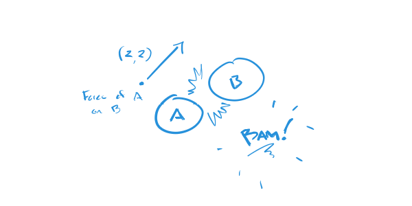
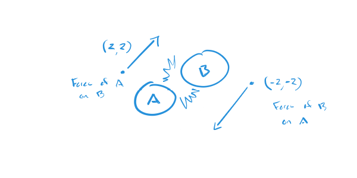

A Restatement of Newton's Third Law that You Can Use
I often hear Newton's Third Law stated as, "Every action has an opposite and equal reaction." As a beginner learning physics, I don't really understand what this statement says and I certainly don't understand how to use it.
Here is a formulation of the law that I do know how to use.
At a particular moment, if a body exerts a force on another body, then the second body exerts a force on the first body that has the same magnitude as the original force and opposite direction.
Here's how to use it.
Suppose, at some moment in time, that body A exerts a force of (2, 2) on body B. Assume that the force is the result of a collision.
Based on the third law, that is, the part that says, "...then the second body exerts a force on the first body that has equal magnitude and opposite direction," you can conclude that body B exerts a force on body A.
